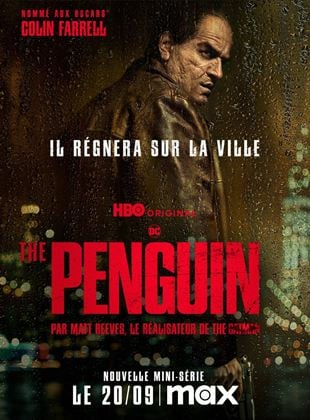
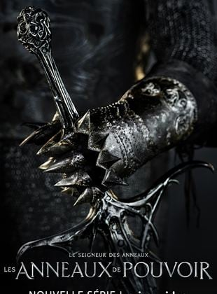
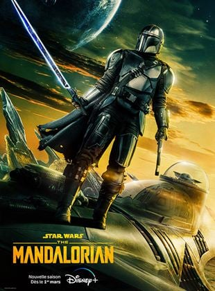

Séries à voir absolument
Retrouvez les critiques des séries les plus populaires, ainsi que des recommandations selon vos goûts.
-

- The Penguin : Série spin-off du film The Batman de Matt Reeves centrée sur l'ascension de Pingouin dans le monde criminel de Gotham City.
- Le Seigneur des Anneaux : Les Anneaux de Pouvoir : Commençant à une époque de paix relative, la série suit un ensemble de personnages, à la fois familiers et nouveaux, alors qu’ils affrontent la réémergence tant redoutée du mal sur la Terre du Milieu. Des profondeurs les plus sombres des Monts Brumeux, aux forêts majestueuses de la capitale Elfique de Lindon, à l’île royaume à couper le souffle de Númenor, et jusqu’aux confins les plus éloignés du monde, ces royaumes et personnages bâtiront des légendes qui continueront d’exister bien longtemps après leur mort.
L'intrigue se déroule plusieurs milliers d’années avant les événements des livres J.R.R. Tolkien "Le Hobbit" et "Le Seigneur des Anneaux". - The Mandalorian : Après les aventures de Jango et Boba Fett, un nouveau héros émerge dans l'univers Star Wars. L'intrigue, située entre la chute de l'Empire et l'émergence du Premier Ordre, suit les voyages d'un chasseur de primes solitaire dans les contrées les plus éloignées de la Galaxie, loin de l’autorité de la Nouvelle République.

